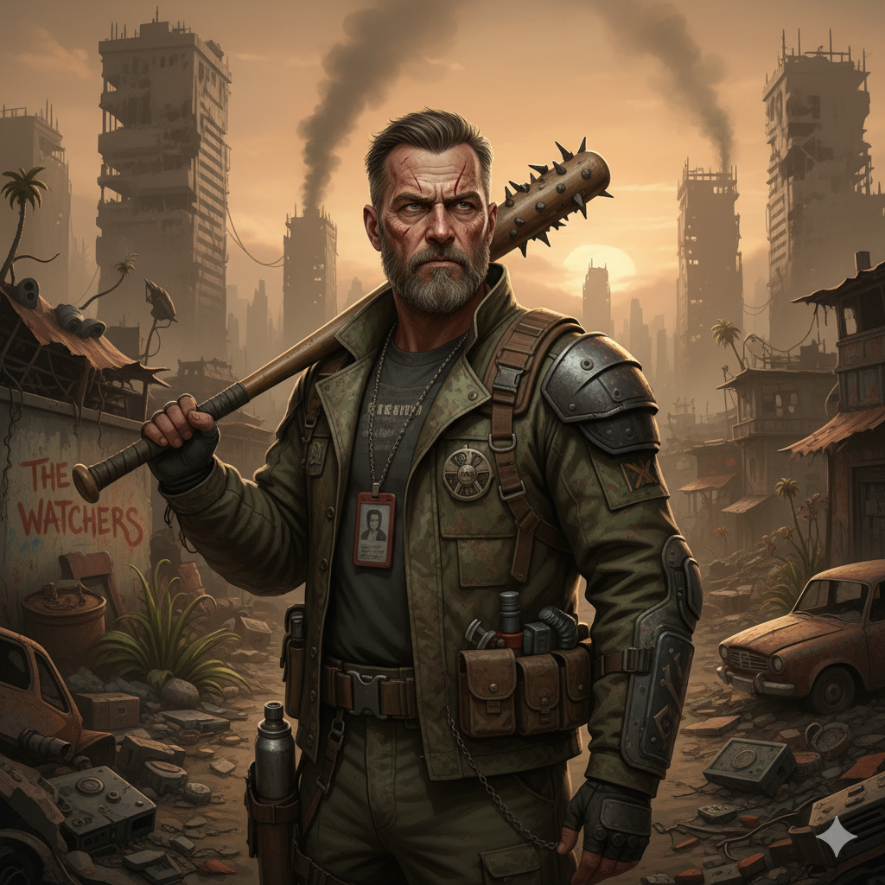
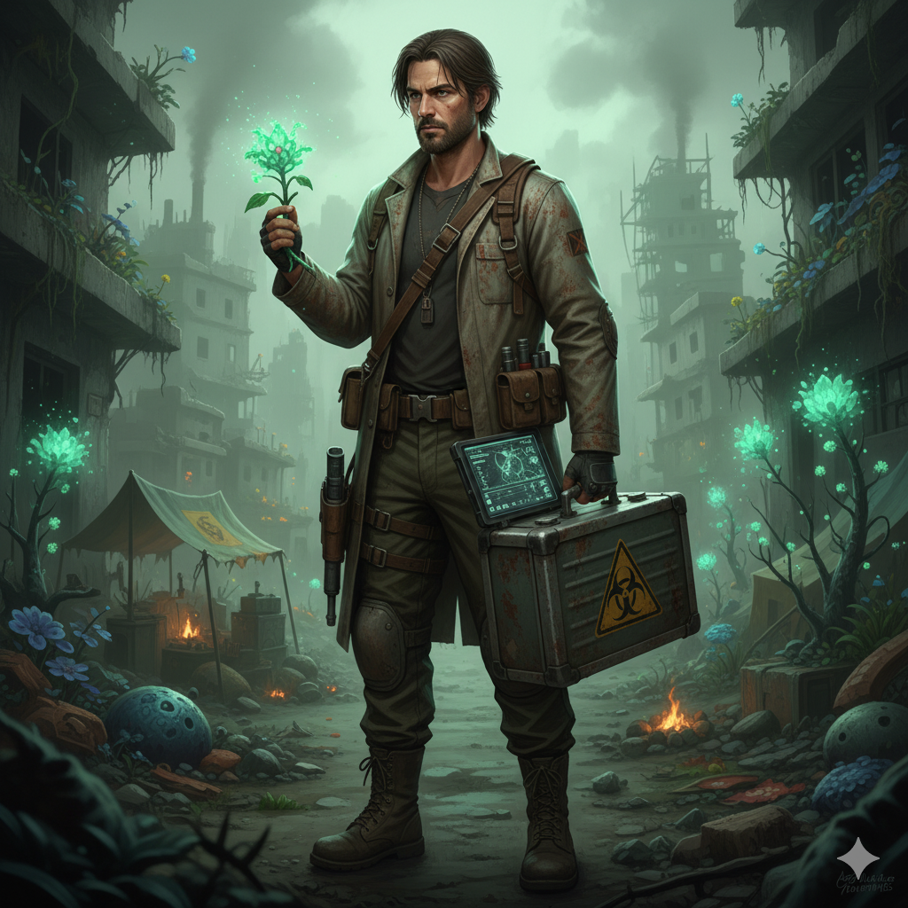

> ACCÈS_ARCHIVES :: DISQUE_DUR_RÉCUPÉRÉ

ID: BOB_UNIT-01 | Statut: ACTIF
Âge : 51 cycles cycles standard
Ancien métier : Agent de sécurité [Secteur Civil]
Profil : Sujet robuste. Psychologie marquée par un traumatisme sévère. Seul garant identifié de la l'intégrité de la Base.
Tragédie : Perte confirmée de l'unité familiale [Femme/Fille] lors de l'Événement Z.
Directive Principale : Assurer la survie du cluster humain isolé. Localiser vecteur de soin [Vaccin].

ID: ELIOTT_UNIT-02 | Statut: ACTIF
Âge : 30 cycles cycles standard
Ancien métier : Chercheur en biologie [Niveau 4]
Profil : Analyse critique. Indispensable aux opérations techniques et structurelles. Recherche active d'une solution virologique.
Tragédie : Perte de la fiancée et du géniteur lors de la Panique Initiale.
Directive Principale : Synthétiser un antidote. Restaurer l'ordre biologique.